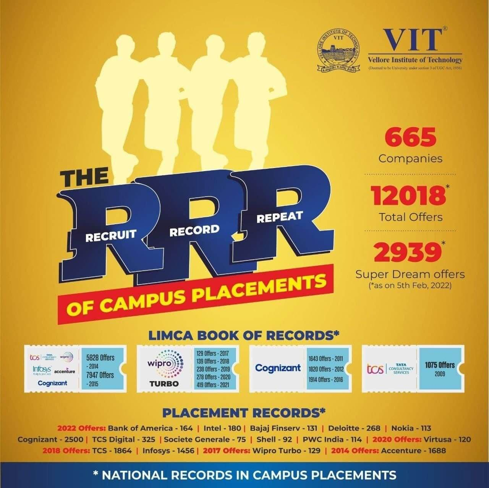

Career
Welcome to the Career page of VIT University. Explore opportunities for career development and job placements.
Job Opportunities
Discover exciting career opportunities with our university:
- Assistant Professor: 3 Openings (1 for Mathematics, 2 for Computer Science Subjects)
- Event Manager: All the events of the University should be managed.
- Software Developer: Need to develop the software for academic and hostel purposes.
About Career Development Center
The Career Development Centre (CDC) plays an integral role in creating the illustrious placement record of VIT. It ensures smooth functioning of the placement activities on the campus. The centre also facilitates training activities for the students to ensure that they get placed with national and international companies as well. VIT AP has a dedicated Placement and Training (PAT) centralized with VIT Career Development Centre for the enhancement of the Student’s skills and aptitude. The VIT placement Cell is committed to offer its students a variety of opportunities to get placed with companies of their choice once their course gets over. Through arranging meetings with professional trainers and VIT alumni, the centre helps the students to prepare themselves for placement interviews in technical and HR aspects and also get well prepared for group discussions. The Career Development Centre (CDC) makes sure that the students get well-versed in Coding and aptitude skills, to perform better in tests and interviews.

The recruiting companies arrive on the campus by the month July and the placement process begins for a wide range of job opportunities. A lot of students get placed with Super Dream Offer and many are with Dream Offer. Over the years, reputed companies like Intel, Microsoft, EBay, Amazon, Dell, GE, Texas Instruments, Schneider Electric, DE Shaw & Co, Hitachi, HP, PayPal, Tata Motors, L&T, Dr. Reddy’s, Bosch, Deloitte, Morgan Stanley, Qualcomm, Ashok Leyland, Honda, Ford, Global Analytics, TCS, Cognizant, Accenture, Wipro and Infosys have their recruits from VIT. In 2021-2022 CDC has brought more than 844 companies and in 2022-23 with around 1000 on campus for placements and around 600 students had multiple offers. The highest offer made was 63 lakhs per annum by Tredence
- Resume Writing Workshops
- Interview Preparation
- Job Search Assistance